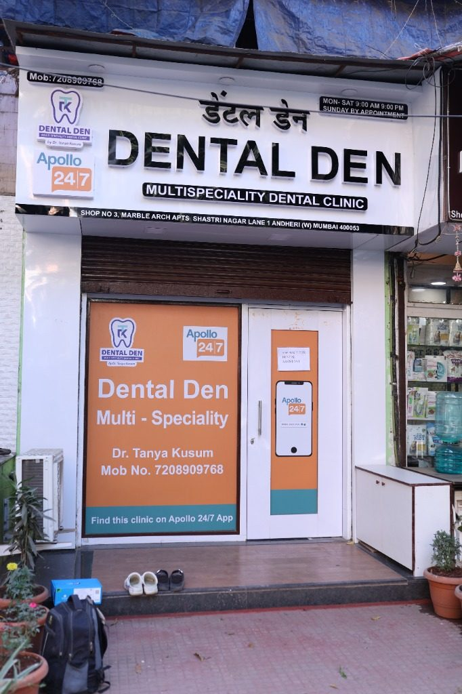

Clinic Entrance · Marble ArchI trained at Govt. Medical College, Nagpur — one of the most demanding programs in the country. The patients we saw there often came in with conditions that had been ignored for years. What I learned, more than any technique, was that good dentistry is mostly listening.
After my MDS I spent three years pursuing fellowships in craniofacial trauma and advanced implantology. The first taught me to be unafraid of the difficult cases. The second taught me how to rebuild what time, accident, or neglect had taken away.
Dental Den was born out of a quiet frustration with how dentistry is often delivered — rushed, transactional, alarming. I wanted to build a place where the chair feels like a chair, not a verdict. Where patients are treated as people, not procedures. Where saying "you don't need that" is as common as saying "let's begin."
That is the practice I run today, and the team I am lucky to lead.